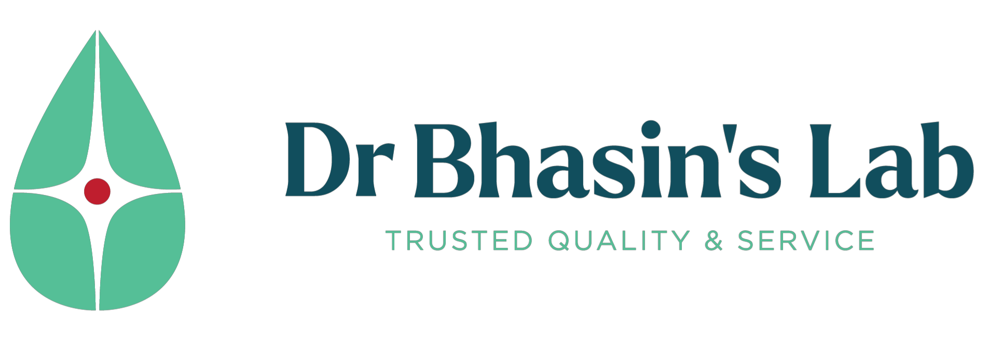
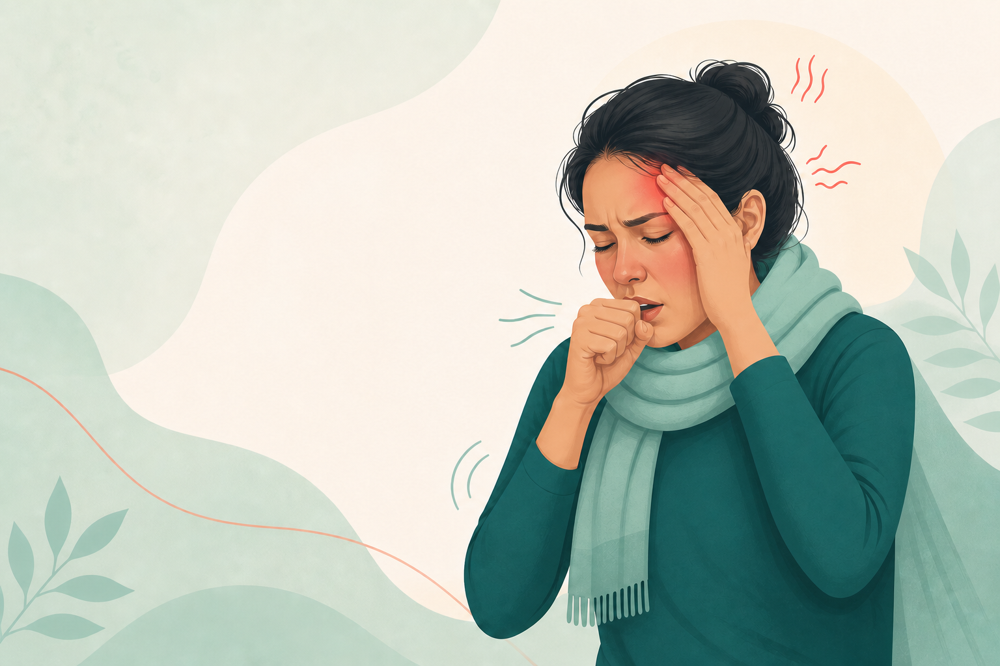
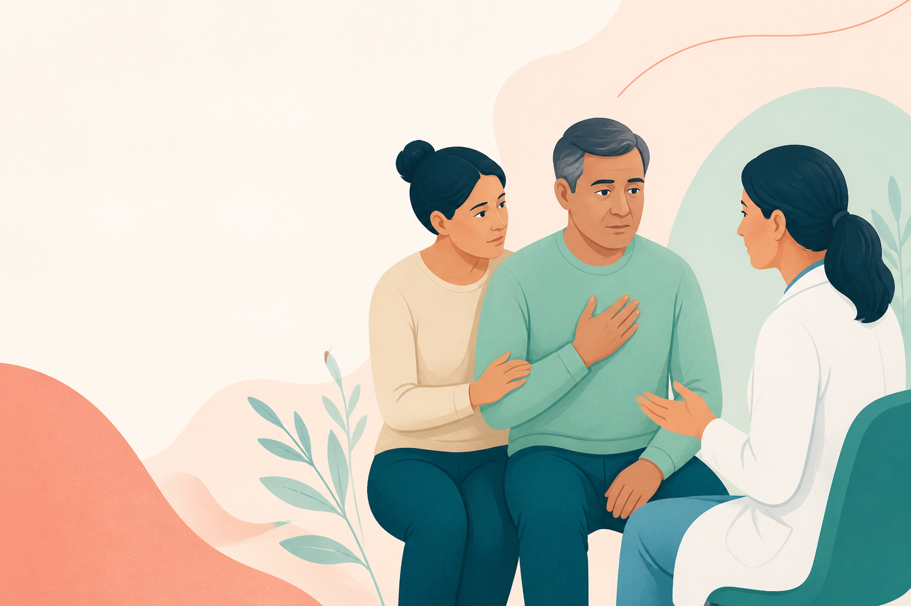
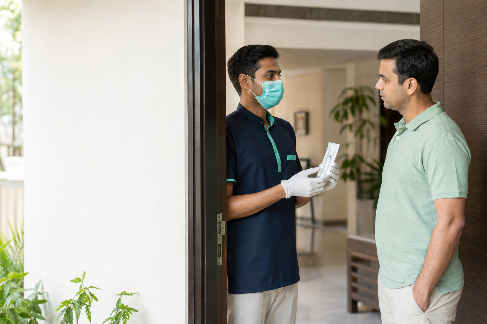

Walk in — any time
S-35, Hansraj Gupta Road, Greater Kailash-I, New Delhi 110048.
Get directions →
Call 93111 93111FLU TESTING WHEN TIME MATTERS
H1N1, H3N2 & Flu RT-PCR testing with clear 8–10 hour reporting, day and night.
No appointment · Walk in 24×7 · Home collection across Delhi & NCR
Influenza A & B · H1N1 · H3N2 · RSV
H1N1 · H3N2 · hMPV A/B · Bocavirus · Enterovirus · Rhinovirus · Adenovirus · Influenza A/B/C
The same trusted testing, at our lab or your home.
S-35, Hansraj Gupta Road, Greater Kailash-I, New Delhi 110048.
Get directions →Across Delhi & NCR until 11 PM, subject to slot availability. No extra collection charge.
Request a callback →Rapid access for clinics, hospitals and referring doctors, with the same stated report time.
Start an enquiry →WHY DR BHASIN'S LAB
“Same day” can mean almost anything. Our stated report time is clear: 8–10 hours from sample collection, with testing through the day and night at GK-I.
Same 8–10 hour TAT for night, Sunday and holiday samples
Home collection across Delhi & NCR included in the price
No appointment or documentation required
Walk-in access at GK-I, 24×7×365
Our Swine Flu Panel covers Influenza A, Influenza B, H1N1, H3N2 and RSV.
These infections can look very similar, yet each may require different treatment, monitoring or supportive care. As a medically led laboratory, we believe testing should provide the most clinically useful answer—not simply the narrowest test.
UNDERSTANDING INFLUENZA
H1N1, H3N2, Influenza B, RSV and other respiratory viruses often present with overlapping symptoms. While many infections remain mild, some can progress to pneumonia, respiratory distress or complications in high-risk patients.
The clinical value of testing is not simply confirming “flu”—it is identifying which respiratory virus is causing the illness, early enough to guide the next clinical decision.

Sudden fever or feeling feverish
Chills
Cough
Sore throat
Runny or blocked nose
Headache
Muscle and body aches
Marked fatigue or weakness
Reduced appetite
Vomiting or diarrhoea, especially in children
WHY TIMING MATTERS
Influenza antivirals work best when started as early as possible, ideally within about 48 hours of symptom onset. But 48 hours is not an absolute cutoff: people with severe or progressive illness, hospitalisation or high-risk conditions may still benefit when treatment starts later.
WHEN TO CONSIDER RT-PCR
Symptoms are moderate, severe or worsening
The patient is pregnant, very young, older or immunocompromised
There is asthma, diabetes, heart, lung, kidney or liver disease
Pneumonia or lower-respiratory disease is suspected
Identifying the virus may change clinical management
A doctor recommends RT-PCR or an outbreak needs confirmation
If any warning signs are present, urgent assessment matters more than arranging an outpatient test.

Breathlessness or difficulty breathing
Chest pain
Bluish lips, face or nails
Confusion, fainting or altered consciousness
Severe lethargy, dehydration or marked weakness
Coughing blood
Poor feeding in a young child
Symptoms that improve and then become significantly worse
Worsening of an important underlying condition
CHOOSE THE RIGHT PANEL
Panel selection should follow the clinical question—not a sales pitch.
MEET THE VIRUSES
Respiratory syndromes overlap too much for reliable symptom-only identification.
A major cause of seasonal flu. H1N1 and H3N2 are Influenza A subtypes.
Symptoms alone cannot reliably separate it from H3N2; subtype identification adds precision.
Another seasonal Influenza A subtype that can cause substantial illness.
Clinically indistinguishable from Influenza A and should not be assumed mild.
Usually milder, but can cause lower-respiratory illness.
Important in infants, older adults and vulnerable people.
Can resemble RSV, with cough, wheeze or pneumonia.
A frequent cause of colds and an important asthma trigger.
May cause respiratory, eye or gastrointestinal symptoms.
EV-D68 can cause severe wheeze; new weakness needs urgent assessment.
Mostly associated with respiratory illness in young children.

HOME COLLECTION · DELHI NCRCOLLECTION, YOUR WAY
Walk in at any hour. For home collection, a trained collector can visit across Delhi NCR until 11 PM, subject to availability.
COMMON QUESTIONS
No. Symptom overlap is too great for reliable bedside identification.
Respiratory viral load is generally highest early in illness, so early collection can improve yield.
Not if you are very unwell. Clinically indicated treatment should not be delayed solely for a result.
A trained collector takes a combined nasopharyngeal and oropharyngeal swab. No fasting is required.
No. It does not exclude every virus, bacterial infection or non-infectious illness.
No. Walk in 24×7 at GK-I or request home collection, subject to availability.
No extra home-collection charge is added to these test prices.
Dr Vipul Bhasin, MD (Clinical Biochemistry)
Laboratory Director, Dr Bhasin's Lab
This information supports, but does not replace, consultation with a qualified medical professional. Seek urgent medical care for severe or worsening symptoms.
Call the laboratory. A real team member will help you choose walk-in or home collection.
Home collection is available across Delhi NCR, including Greater Kailash, Kailash Colony, East of Kailash, CR Park, Kalkaji and Malviya Nagar, subject to slot availability.
S-35, Hansraj Gupta Road, Greater Kailash-I, New Delhi 110048 · Open 24×7×365